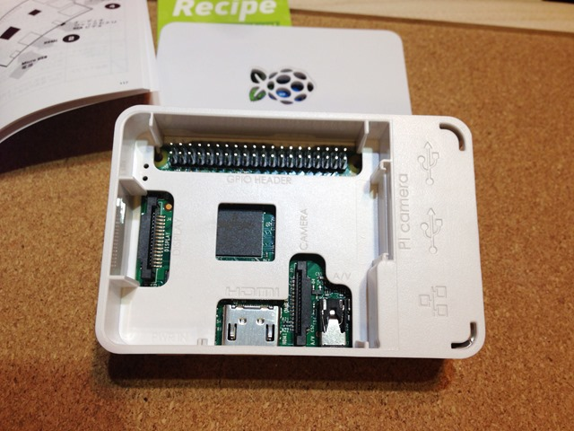

今日は、Pi2 と arduino をシリアル通信させてLED を光らせてみました。全体像はこんな感じ。

緑色のブレッドボードにある LED は arduino の 3pin につながっています。Pi2 からシリアル経由でLED を光らせる形です。

良いチュートリアルなBlog 記事があったので、それを習ってみました。
参考 Raspberry PiとArduino間でUSB経由のシリアル通信
まず、arduino のスケッチは、上記サイトにあるとおり、
#define LED_PIN (3)
byte val;
void setup(){
// Serial Setting
Serial.begin(9600);
// Port Setting
pinMode(LED_PIN, OUTPUT);
digitalWrite(LED_PIN, LOW);
}
void loop(){
if(Serial.available() > 0){
val = Serial.read();
Serial.write(val);
if(val == 'A'){
digitalWrite(LED_PIN, HIGH);
}
if(val == 'B'){
digitalWrite(LED_PIN, LOW);
}
}
}
そして、書き込んで、今度は pi2 からシリアル通信させます。
USB ケーブルを挿すと、pi2 側の dmesg に以下のように出ますので、覚えておきます。
[root@pi2 ~]# dmesg
::
[ 4270.245917] usb 1-1.5: new full-speed USB device number 5 using dwc_otg
[ 4270.369007] usb 1-1.5: New USB device found, idVendor=1a86, idProduct=7523
[ 4270.376106] usb 1-1.5: New USB device strings: Mfr=0, Product=2, SerialNumber=0
[ 4270.383583] usb 1-1.5: Product: USB2.0-Serial
[ 4271.484705] usbcore: registered new interface driver usbserial
[ 4271.491107] usbcore: registered new interface driver usbserial_generic
[ 4271.499466] usbserial: USB Serial support registered for generic
[ 4271.508688] usbcore: registered new interface driver ch341
[ 4271.514472] usbserial: USB Serial support registered for ch341-uart
[ 4271.521035] ch341 1-1.5:1.0: ch341-uart converter detected
[ 4271.531056] usb 1-1.5: ch341-uart converter now attached to ttyUSB0★
[root@pi2 ~]#
[root@pi2 ~]# ll /dev/ttyUSB0
crw-rw—- 1 root dialout 188, 0 7月 6 23:08 /dev/ttyUSB0★
[root@pi2 ~]#
pi2 からシリアル通信させるプログラムは、minicom というのを使ってみました。
[root@pi2 work]# which minicom
/usr/bin/minicom
設定は、以下のように –s をつけて起動。
▼設定
[root@pi2 work]# LANG=C minicom –s
以下のように cui で選択して設定します。
┌─────[configuration]──────┐
│ Filenames and paths │
│ File transfer protocols │
│ Serial port setup │
│ Modem and dialing │
│ Screen and keyboard │
│ Save setup as dfl │
│ Save setup as.. │
│ Exit │
│ Exit from Minicom │
└──────────────────────────┘
┌───────────────────────────────────────────────────────────────────────┐
│ A - Serial Device : /dev/ttyUSB0 │
│ │
│ C - Callin Program : │
│ D - Callout Program : │
│ E - Bps/Par/Bits : 9600 8N1 │
│ F - Hardware Flow Control : Yes │
│ G - Software Flow Control : No │
│ │
│ Change which setting? │
└───────────────────────────────────────────────────────────────────────┘
┌─────────────────┌─────────[Comm Parameters]──────────┐────────────────┐
│ A - Serial De│ │ │
│ │ Current: 9600 8N1 │ │
│ C - Callin Pro│ Speed Parity Data │ │
│ D - Callout Pro│ A: <next> L: None S: 5 │ │
│ E - Bps/Par/B│ B: <prev> M: Even T: 6 │ │
│ F - Hardware Flo│ C: 9600 N: Odd U: 7 │ │
│ G - Software Flo│ D: 38400 O: Mark V: 8 │ │
│ │ E: 115200 P: Space │ │
│ Change which │ │ │
└─────────────────│ Stopbits │────────────────┘
│ Screen a│ W: 1 Q: 8-N-1 │
│ Save set│ X: 2 R: 7-E-1 │
│ Save set│ │
│ Exit │ │
│ Exit fro│ Choice, or <Enter> to exit? │
└─────────└────────────────────────────────────┘
で、実行。
[root@pi2 work]# LANG=C minicom
Welcome to minicom 2.7
OPTIONS: I18n
Compiled on Aug 17 2014, 17:46:22.
Port /dev/ttyUSB0, 23:40:40
Press CTRL-A Z for help on special keys
AABABABABABAAABAB★こんな感じで、タイプするとLED ついたり消えたり。
終了は、CTL + A 押して、Z でメニュー 以下の Q で終了
┌───────────────────────────────────────────────────────────────────┐
│ Minicom Command Summary │
│ │
│ Commands can be called by CTRL-A <key> │
│ │
│ Main Functions Other Functions │
│ │
│ Dialing directory..D run script (Go)....G | Clear Screen.......C │
│ Send files.........S Receive files......R | cOnfigure Minicom..O │
│ comm Parameters....P Add linefeed.......A | Suspend minicom....J │
│ Capture on/off.....L Hangup.............H | eXit and reset.....X │
│ send break.........F initialize Modem...M | Quit with no reset.Q │
│ Terminal settings..T run Kermit.........K | Cursor key mode....I │
│ lineWrap on/off....W local Echo on/off..E | Help screen........Z │
│ Paste file.........Y Timestamp toggle...N | scroll Back........B │
│ Add Carriage Ret...U │
│ │
│ Select function or press Enter for none. │
└───────────────────────────────────────────────────────────────────┘
今度は、python から制御。 pyserial を入れます。
[root@pi2 ~]# dnf install python-pip
[root@pi2 ~]# pip install --upgrade pip
You are using pip version 6.0.8, however version 7.1.0 is available.
You should consider upgrading via the 'pip install --upgrade pip' command.
Collecting pip from https://pypi.python.org/packages/py2.py3/p/pip/pip-7.1.0-py2.py3-none-any.whl#md5=b108384a762825ec20345bb9b5b7209f
Downloading pip-7.1.0-py2.py3-none-any.whl (1.1MB)
100% |################################| 1.1MB 37kB/s
Installing collected packages: pip
Found existing installation: pip 6.0.8
Uninstalling pip-6.0.8:
Successfully uninstalled pip-6.0.8
Successfully installed pip-7.1.0
[root@pi2 ~]#
[root@pi2 ~]# pip install pyserial
::
Successfully installed pyserial-2.7
[root@pi2 ~]#
プログラムは、以下のようにA と B をループして、CTL + C で中断したら、B を流しLEDを消して、終了。
---- loop.py
# -*- coding: utf-8 -*-
import serial
import time
ser = serial.Serial('/dev/ttyUSB0', 9600)
time.sleep(2)
try:
while True:
ser.write('A')
time.sleep(1)
ser.write('B')
time.sleep(1)
except KeyboardInterrupt:
ser.write('B')
ser.close()
実行してみます。
[root@pi2 work]# python loop.py
なるほどですね。まぁ、これだと、pi2 の GPIO ピンから直接制御すればええやんってことになりますが、、、次は、arudino のアナログ入力にセンサーをつけて、それをpi2 に渡す方法を実践してみたいと思います。I2C とかシリアルを使わない結線だと、promini とかが使えるので、そういうのをどのようにするのか調査して、実践してみたいと思っています。